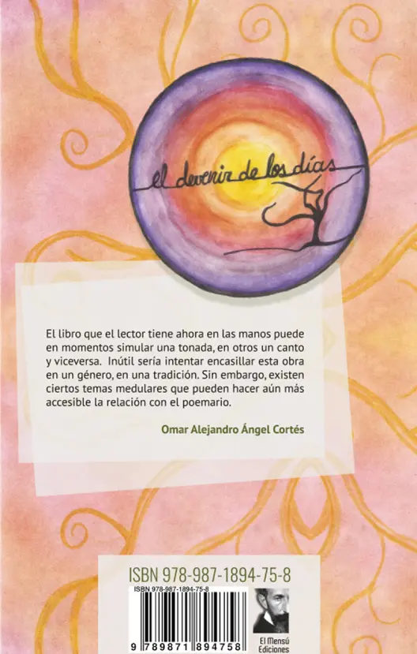
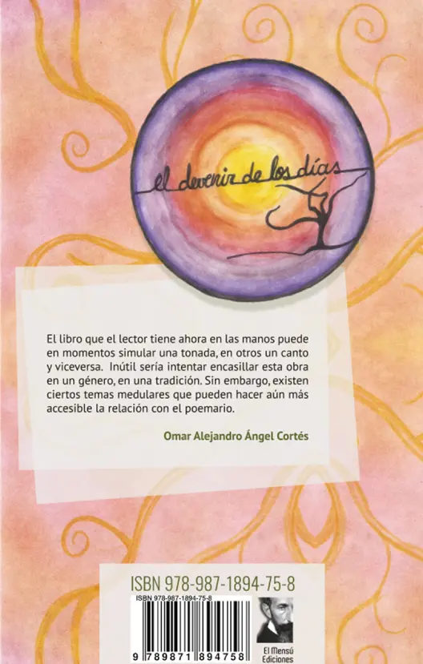

LIBROS


Los Viajes Del Silencio
El presente poemario, fue elaborado en el marco del Proyecto de Investigación “Memorias de la resistencia. Estrategias de sobrevivencia de las mujeres detenidas por razones políticas en argentina, durante el período 1976/1983”, aprobado y financiado por la Universidad Nacional de Villa María, durante el período 2016/2017. Estos poemas surgen tras meses de trabajo y visitas a los Centros de Detención Clandestina, surgen de las charlas con los sobrevivientes, surgen de la lectura de los libros y materiales de consulta utilizados durante el proceso de Investigación, y surgen, finalmente, como subjetividades inevitables.
- Prólogo: Liliana Guillot
- Diseño: Laura Bonfigli
- Dibujos: Georgina Cittadini
Año: 2018
 

El Devenir De Los Días
Uno deviene, transcurre en algo; sobre y desde algo, quizás difícil de poner en términos conceptuales. Sabemos que somos habitantes de un tiempo y un lugar, sin –quizás- tener una total o acabada comprensión de lo que ello implica. Nos sabemos parte de algo, pero la incertidumbre nos atraviesa la existencia como una daga. Nos envolvemos en preguntas, que a veces suelen atosigarnos; nos perdemos y nos encontramos con una frecuencia de periodicidad inconclusa, pero constante. Nos sabemos cambiando, en movimiento, quizás sin certeza real de un destino certero. Devenimos en los días, como parte del fluir coetáneo de la existencia que se nos viene asignada cuando nos mandan a nacer sin preguntarnos. Y en ese trajín del día a día, algunos quizás nos perdemos como en la caracola de una espiral, sin certezas. Y allí sin más, descubriendo el día de cada día, me encontré analizando (me), y relatando (lo). Casi como una pequeña bitácora del viaje de la vida que nos toca, elegimos y construimos
- Prólogo: Omar Alejandro A. Cortés
- Diseño: Darío Falconi
- Dibujos: Georgina Cittadini
Año: 2016